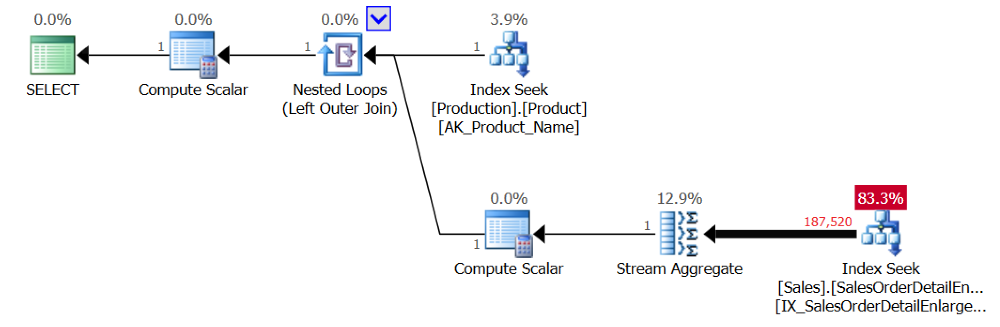

APPLY Yourself
Using SQL Server's APPLY Operator
Kevin Feasel (@feaselkl)https://csmore.info/on/apply
Who Am I? What Am I Doing Here?


The APPLY Operator
At its simplest, APPLY is similar to JOIN but allows for a dependency between the data sets being merged together.
Microsoft introduced the APPLY operator in SQL Server 2005, with two variants: CROSS APPLY and OUTER APPLY. CROSS APPLY is semantically similar to INNER JOIN, whereas OUTER APPLY is akin to OUTER JOIN.
Motivation
“If you don't understand the APPLY operator, your skills are somewhere around the 50th percentile at best.” -- Adam Machanic
APPLY is not always the best solution, but solves a number of problems in an elegant manner.
Agenda
- Join to Functions
- Pre-Aggregate Data
- Get a Specific Child Record
- Get the top N for each X
- Simplify Calculations
Getting Session Info
We can use sys.dm_exec_connections to get basic information for each session, but this doesn't give us query text. There is a table-valued function named sys.dm_exec_sql_text([handle] varbinary) but we need to pass in the handle for each row in our connections DMV.
Getting Session Info
Unfortunately, you cannot use INNER JOIN to join to a function which expects a parameter.

The Solution
Demo Time
Lessons Learned
- Use
APPLYto execute table-valued functions as though they were tables. OUTER APPLYcan show rows thatCROSS APPLYwould filter out.
Agenda
- Join to Functions
- Pre-Aggregate Data
- Get a Specific Child Record
- Get the top N for each X
- Simplify Calculations
The Problem Description
We want to figure out how many times somebody has ordered a water bottle from the Adventure Works store. We'd also like to see which product category and subcategory this belongs to.
Demo Time
Lessons Learned
- Use
APPLYto return data from ad hoc (derived) functions. - We could also use other techniques to pre-aggregate, such as correlated sub-queries.
- IN THIS CASE
APPLYworked better because early aggregation allowed us to reduce the number of rows going through a nested loop join.
Agenda
- Join to Functions
- Pre-Aggregate Data
- Get a Specific Child Record
- Get the top N for each X
- Simplify Calculations
The Problem Description
We want to see each customer's latest order, PO numbers associated with those orders, and the total due on each order.
There are three set-based options that we can use to perform this operation:
- Nested Sub-Query
- Common Table Expression (CTE) with a window function
- Derived function with
APPLY
There are Row By Agonizing Row (RBAR) solutions available like using a cursor/WHILE loop, but these will not perform well. We might also put something together with temporary tables which could scale, but start with simple.
Demo Time
Lessons Learned
- The nested subquery tends to be inferior to the CTE and can be worse than
APPLY. - The CTE solution is understandable but does not scale well.
- The
APPLY-based solution is inefficient for small loads but scales extremely well.
With small data sets, pick the one you prefer most, as they will all perform well enough.
Agenda
- Join to Functions
- Pre-Aggregate Data
- Get a Specific Child Record
- Get the top N for each X
- Simplify Calculations
The Problem Description
This is a generalization of the "specific child record" problem.
We want to see the average, minimum, maximum, and total prices of each customer's last 5 orders.
There are still three set-based options that we can use to perform this operation:
- Nested Sub-Query
- Common Table Expression (CTE) with a window function
- Derived function with
APPLY
With that said, however, the nested sub-query quickly becomes nasty to write, and we already know from the prior example that it doesn't scale well.
Demo Time
Lessons Learned
Similar to the specific case, the APPLY version looks worse early on but scales much better.
Use either for small problem sets, but shift to APPLY as the sets get larger.
When is APPLY More Efficient?
NOT ALWAYS!
APPLY runs once for each element in the "parent" (or left-hand) side. Because each iteration is unique, you typically want to see APPLY generate nested loop joins.
APPLY and Efficiency
The ideal scenario for APPLY has:
- Relatively few "parent" records
- A huge number of "child" records
- Relatively few interesting "child" records
In other words:

This also worked for aggregation because we had one "parent" row.
"Relatively few interesting rows out of a huge total number of rows" is a verbose way of saying "when it is more efficient to seek rather than scan an index." APPLY does much better when it makes sense to seek.
The APPLY operator will consequently perform poorly when:
- Each "parent" row requires a table scan
- The number of "parent" rows is huge
- You need to retrieve almost every row from the "child" table
Use other techniques in these cases or see if you can reduce data requirements.
Agenda
- Join to Functions
- Pre-Aggregate Data
- Get a Specific Child Record
- Get the top N for each X
- Simplify Calculations
Simplify Calculations
SQL Server calculations tend to be repetitious. The APPLY operator can help us with that by feeding the columns from an earlier table or derived function into a later derived function. In other words, named columns you create in one APPLY statement can be used in the next APPLY statement.
Demo Time
Lessons Learned
Use the APPLY operator to remove repetition from calculations.
Wrapping Up
The APPLY operator excels at a few activities:
- Pre-aggregating data
- Getting subsets of child records for each parent record
- Simplifying calculations without losing performance
- Splitting strings
This is not a cure-all operator, though. Be sure to try writing your code a few different ways to see what performs best.
Wrapping Up
To learn more, go here:
https://csmore.info/on/apply
And for help, contact me:
feasel@catallaxyservices.com | @feaselkl
90-minute Course for $40:
https://catallaxy-services.teachable.com/p/apply-yourself
Catallaxy Services consulting:
https://CSmore.info/on/contact